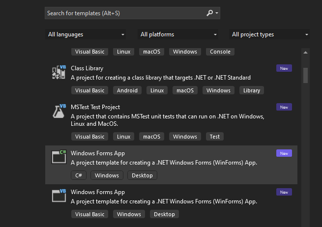
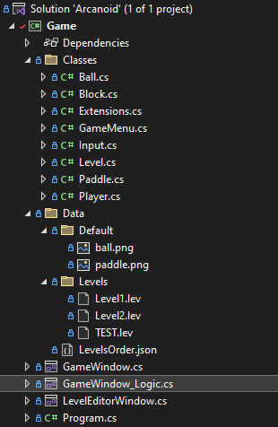
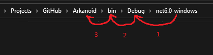

Creating a project for a game.
- Steps
- Launch Visual Studio
- Select Create new Project.
- Select Windows Forms App Template.
- Fell free to give it a name you like, this your game.
- Finish project creation keeping everything else as default options.
After you project is created. We need to install a NuGet package to easily work with JSON fles We will use them to store our settings and levels:
- To install this NuGet Package:
- on the top menu strip select Project -> Manage NuGet Packages
- then to the Browse Tab.(You should have internet connection to install NuGet)
- search for package Newtonsoft.Json and install it
- Next thing we gonna need is to set some basic settings
- There should be “Form1” form created by default, change its name to something like
GameWindow - Create new class a call it
GameWindow_Logic, we will separate basic window code and our actual game code from the start to remove the distractions. - Next copy all the code from our
GameWindowand using it replace everything in theGameWindow_Logic. After that removeGameWindowclass contents insideGameWindow_Logicfile. C# allow to split one class between several files if it haspartialmodifier in its definition. And when form is created by visual studio it has partial modifier by default. - in the GameWindow after initialize component add : “
this.DoubleBuffered = true;”. Cause in games we need redraw screen very often. If this process happens on the screen does not matter how quick it is flickering is inevitable. This option enable form to use second buffer to paint content and swap with the first one. That way actual drawing process is invisible to the user and there will be no flickering. - at last add another form and call it
LevelEditorForm
- There should be “Form1” form created by default, change its name to something like
You shoud end up with something like this:
// GameWindow.cs file content
namespace Game {
public partial class GameWindow: Form {
public GameWindow() {
InitializeComponent();
this.DoubleBuffered = true; // this will remove flickering
}
}
}
// GameWindow_Logic.cs file content
namespace Game {
public partial class GameWindow: Form {
}
}
// LevelEditorWindow.cs file content
namespace Game {
public partial class LevelEditorWindow: Form {
public LevelEditorWindow() {
InitializeComponent();
}
}
}As you can see we will be implementing level editor for our game in the same project just as a separate window. That way we can share same file system between two separate modules and easily switch between them.
After we finish the basics I will show you more complex ways to organize files and make application integration.
Here is GameDev advice: during rapid prototyping and early stages of development use simplest and quickest ways to make you program running and dont allow the mundane “right ways” stuck in your “creativity wheel” on each step you
take or you will be tired very quickly.
Okay. About mundane tasks…
Next thing we need to create a directory structure and add default image of the ball and paddle we will usein our game.
Lets create a resources file structure for our game. Look at this picture as a reference and create folders on top level of the project:

But when our game or level editor will be searhing for Data folder, it did not find it in output folder of compilied project since they are on the top level of our project. Some developers after they adding some image they go to its the properties and set option: Copy if newer. But imagine if we constantly creating new levels or adding new resources during development? I certain that will be very quickly annoyed by this not to mention you will keep forgetting about this and would be wondering why your game cant find some resource… So, instead let’s just add this line: “string ResPath = "..\\..\\..\\Data\\";” to the main classes in GameWindow and LevelEditorWindow:
// GameWindow.cs file content
namespace Game {
public partial class GameWindow: Form {
string ResPath = "..\\..\\..\\Data\\";
public GameWindow() {
InitializeComponent();
this.DoubleBuffered = true; // this will remove flickering
}
}
}
// LevelEditorWindow.cs file content
namespace Game {
public partial class LevelEditorWindow: Form {
string ResPath = "..\\..\\..\\Data\\";
public LevelEditorWindow() {
InitializeComponent();
}
}
}In windows evironment when path contains double dots “..” that means go back one level to the root folder. So if we know what that program output folder deep and out Data folder inside Arkanoid folder three levels higher:

We dont need to know know their name, we just use this : “..\..\..\”.
To proceed to the the most interesting part we need to create one very useful and universal class which WindowsForms lacks. So in next tutorial we will create useful Input wrapper for WindowsForms Control class: